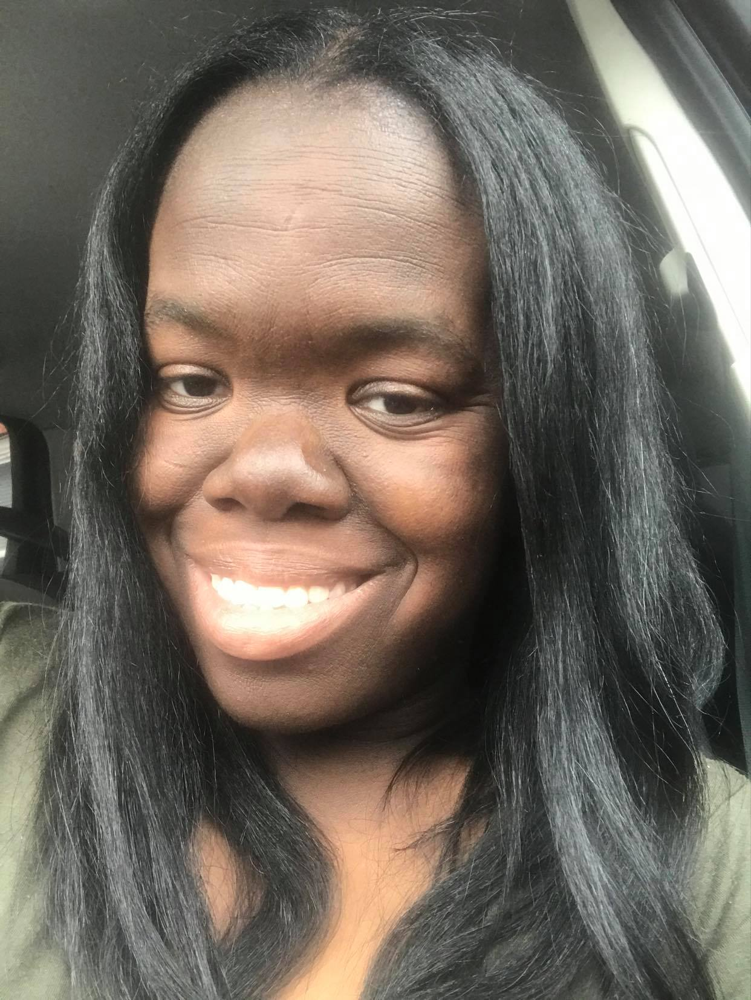

Bio

Hello World! My name is Tashena and I am new to the coding world. I'm one of the changing careers coders who currently works in the early childhood education arena.
I've been working in early childhood education for 15 years now. After the birth of my two amazing children I realized that I needed to do something better
for them and head into a field that will challenge me and that I could also pass on to them.
I graduated from Bloomfield College with a BA in Psychology and while there became a member of Kappa Delta Pi (the educational honor society)
and Psi Chi (the psychology honor society). Afterwards, I went on to graduate from Kean University with a MA in Psychology (I know, I know "career suicide",
but there is a story behind both degrees).